Neurally Controlled Bionic Knee Prosthesis
Summary
I worked on the neurally controlled bionic knee prosthesis, improving reliability, test readiness, and data capture/processing. I redesigned power electronics housing and cable routing to reduce encoder dropout, built MQTT telemetry transmission code, and facilitated preliminary testing every weekend with patients. This work was published in Science, where I was listed as a co-author.
Note: In order to respect the privacy of participants, all testing media items are ones that are already publicly available.
Context
Mobility for amputees has advanced fast, but most innovation has focused on upper-limb and below-knee devices. Above-knee (transfemoral) options remain limited and often lack active control. This project developed a bionic knee prosthesis controlled directly from the user's nervous system.
My Role
I worked on this project from the beginning of its testing phase through its publication. Here's an overview of my major contributions before I dive into more detail:
- Redesigned the power electronics housing and rerouted existing cables to solve a critical encoder issue.
- Used C++ to enhance foot force sensing data transmission via the MQTT Protocol.
- Familiarized with testing protocols, eventually ran tests myself.
- Created MATLAB data processing scripts to pre-process millions of testing data points.
Collaborators: Tony Shu (paper first author), Sean Boerhout (co-intern), Gloria Zhu (co-intern)
Power Electronics Housing + Encoder Fix
Impact: Reduced knee encoder dropouts during high-torque events and consolidated cable management, improving uptime and data quality.
Problem Statement
During high-torque events, the knee encoder intermittently reported incorrect angles due to EMI from the motor, which paused trials and corrupted logs. I needed a retrofit that improved signal integrity and organized cable management.
What I Changed
- Investigated software vs. hardware root causes; confirmed an EMI coupling issue and prioritized a wiring/routing fix.
- Braided and shielded power cables and added ferrites to reduce noise coupling into encoder lines.
- Remodeled the housing to enforce separation of power and signal paths + add strain relief and space for the Arduino Feather (see below).
Skills: CAD • Rapid prototyping • Soldering and Wiring • EMI mitigation
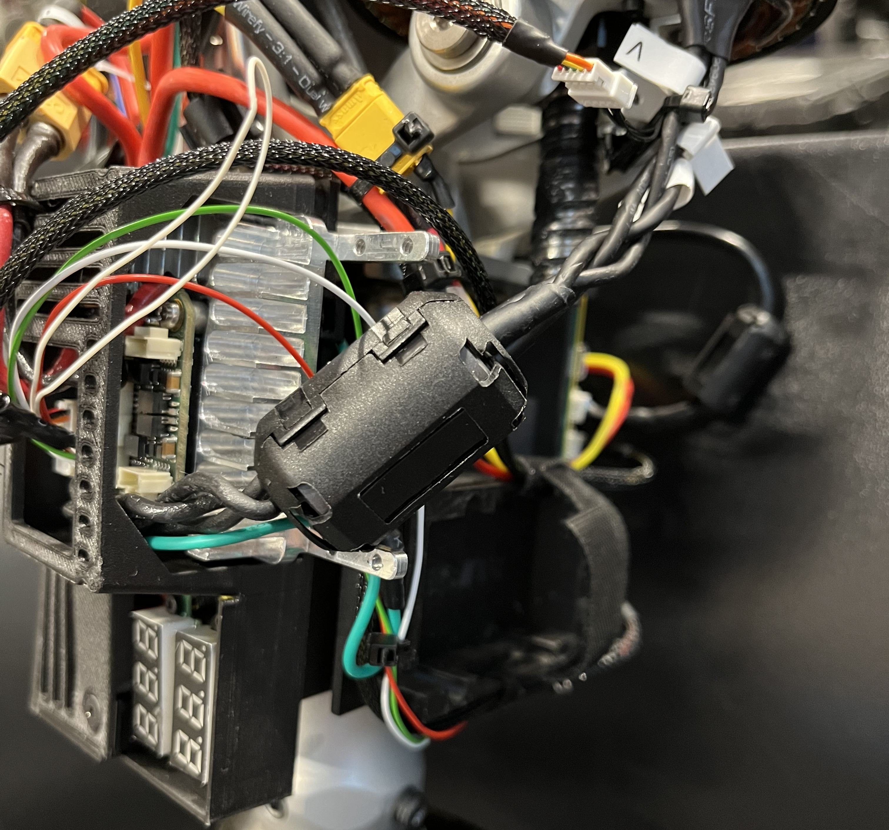
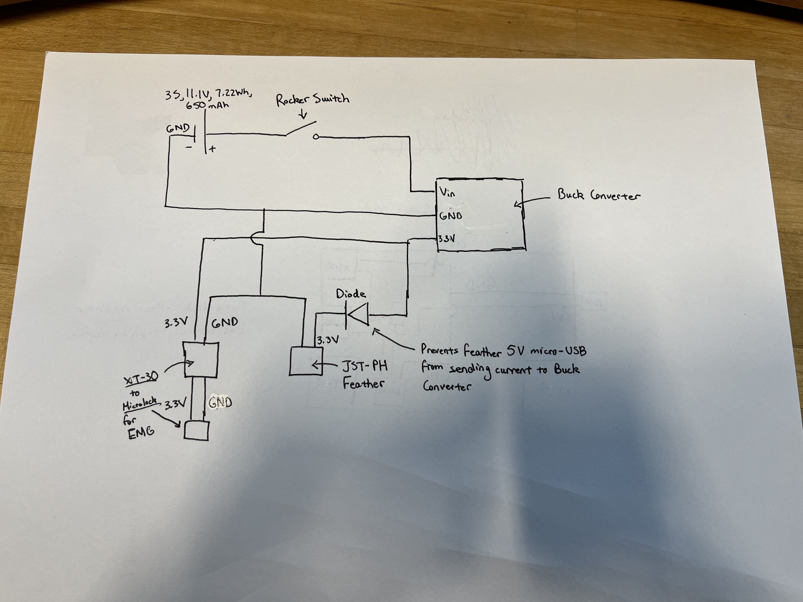
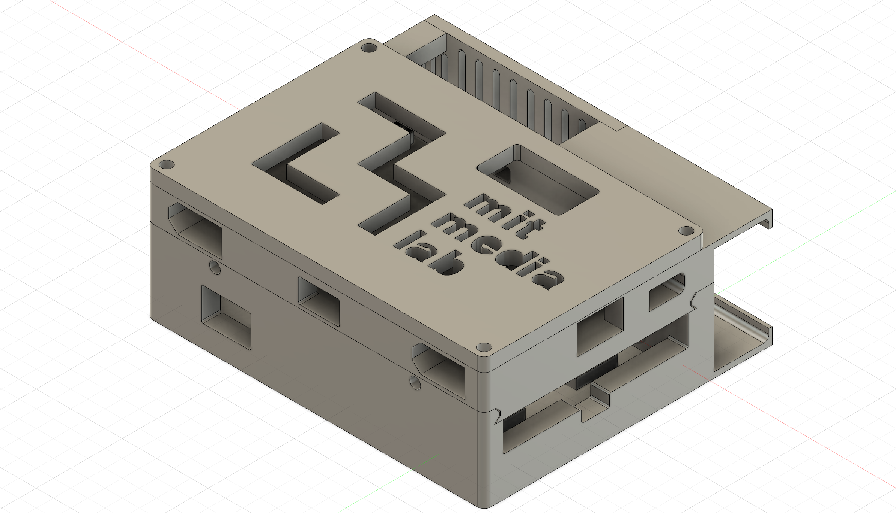
Foot FSR Telemetry (MQTT)
Impact: Improved foot-contact detection reliability and enabled consistent gait event streaming to the EMG board for cleaner trial logs.
Problem Statement
Force sensitive resistors (FSRs) placed on the prosthesis's foot were used to detect ground contact and gait events. Transmitting this information to the central processing unit required reliable data streaming over MQTT.
My Solution: Transmit data using the MQTT protocol over WiFi using Arduino Feathers and clever bit-assignments/byte packing.
What I Built
- Upgraded Feather and FSR setup for more reliable contact data.
- Wrote bit-assignments for efficient data packing and transmitted over MQTT before unpacking on the EMG processing board.
- Reorganized power electronics near the EMG processing board for consolidated form factor.
Skills: C++ • MQTT Streaming • Soldering and Wiring
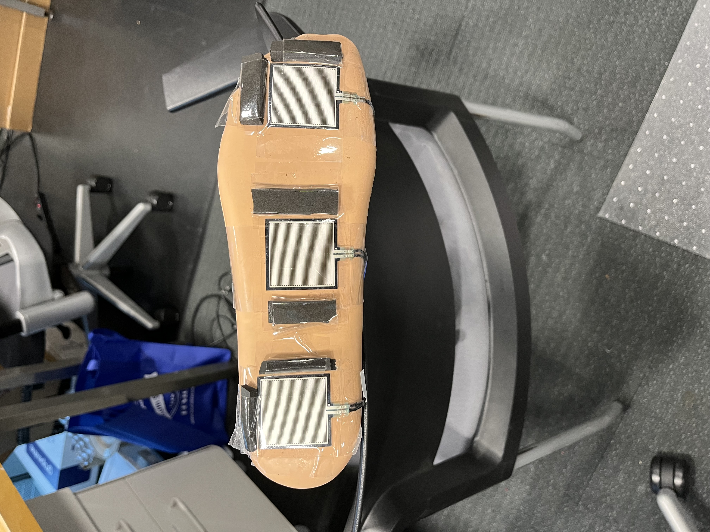
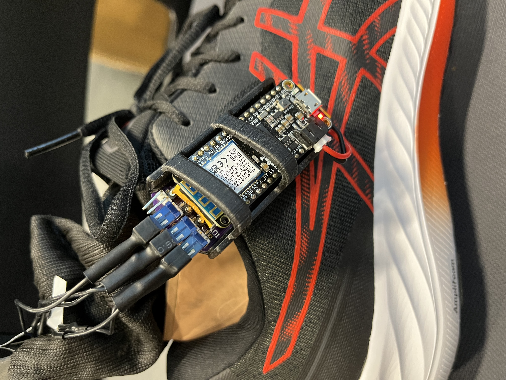
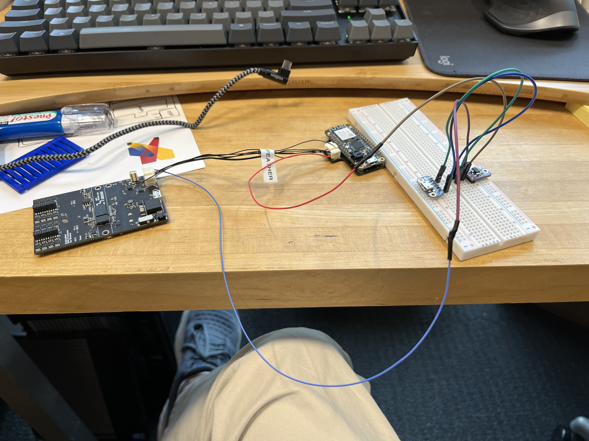
Testing Protocols & Execution
Impact: Took ownership of weekend end-to-end test execution, enabling consistent data collection without reinventing the workflow each time.
Context
Data collection and testing were the largest areas where I supported project progress. Every weekend, I set up the testing environment, interacted with and supported patients, and eventually took ownership of running preliminary data collection activities (more strenuous, technical testing was still managed by Tony).
Testing Workflow Highlights
- Setup: prepared testing hardware, calibrated MoCap, treadmill force plates, and goniometer sensors, and provided consent materials.
- Session: guided participants through preliminary sit-to-stand trials, supported with video production, data capture, and test execution.
- Wrap-up: validated logs and synced data to internal servers for processing.
Miscellaneous
A collection of smaller side projects and supporting tasks that kept the lab moving.
- Contracted PCB-fab companies to produce more surface electrodes.
- Designed new, compliant prosthesis abutment adapters in SolidWorks.
- Assembled spare leg for additional testing.
- Created tables for display in final paper.
- Managed lab logistics and equipment inventory.
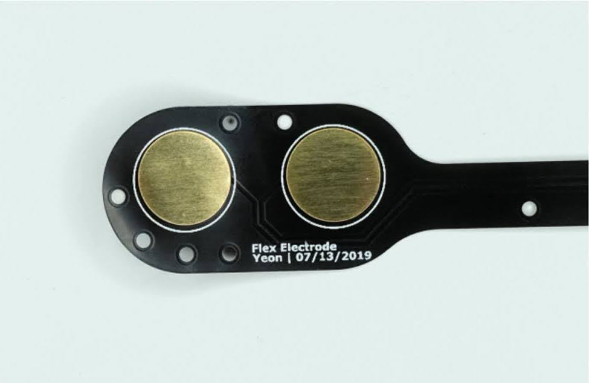
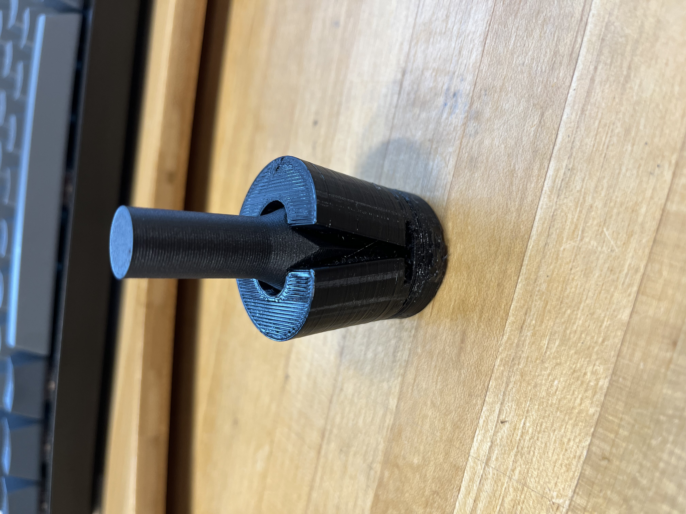
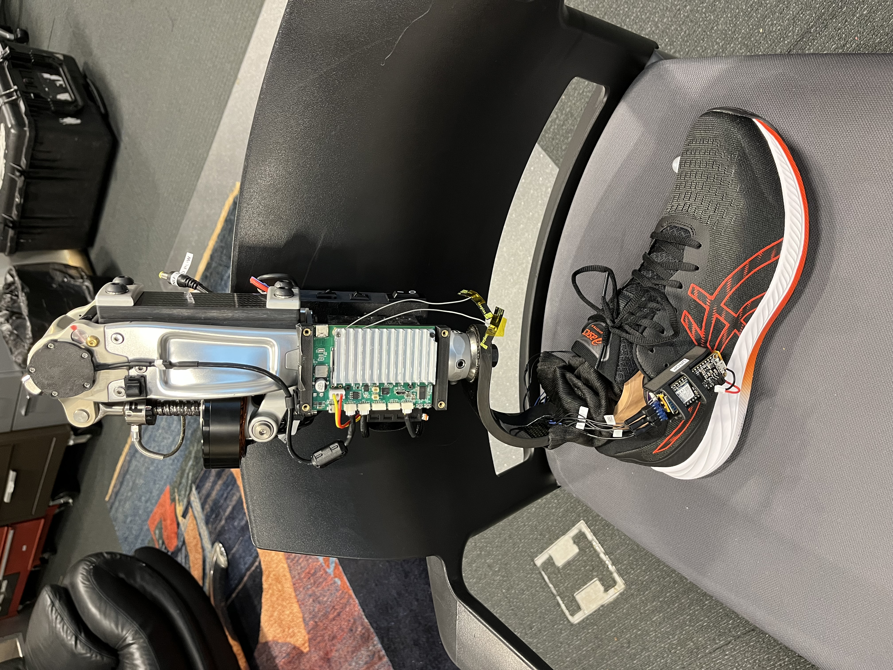
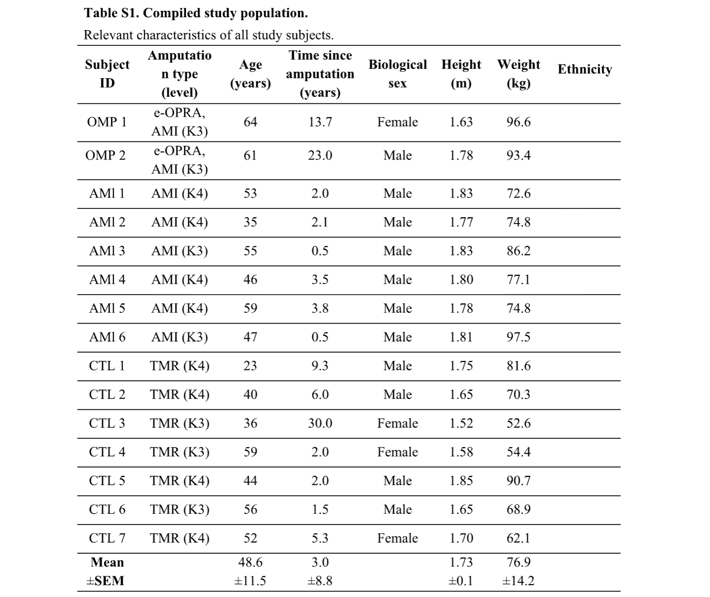
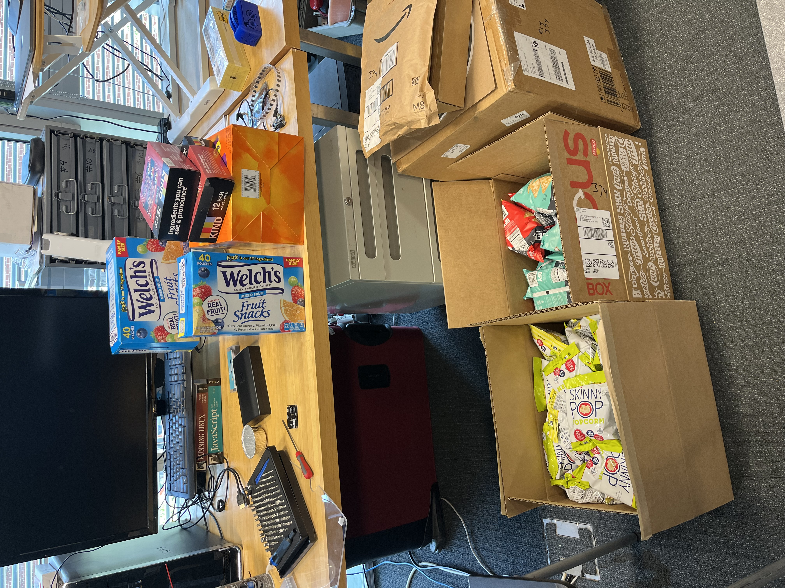
Reflections, Learnings, & Final Paper
This was my first engineering research role. I took away some key engineering learnings:
- Small changes can unlock stability: Rerouting cables, adding ferrites, and iterating housings taught me that reliable, well-organized systems are critical for smoothly functioning hardware and should be prioritized during the design process.
- Efficiency is the second-greatest concern: Outside of getting the leg to work, most of my projects throughout the internship focused on making existing parts of the robot more efficient. In a moving environment, power, thermal efficiency, and quick response times all come at a premium and should always be prioritized when engineering something.
- Presentation of results matters: Preparing for the publication submission, Tony stressed the need for clear, compelling visuals that emphasized a story our testing data attempted to tell. Communicating our complex findings to a broad audience in a meaningful way made all the difference in the performance of the final paper.
More than anything, this experience put into perspective the life-changing power of applied robotics. Seeing patients get emotional while walking up and down stairs for the first time in 20 years tugged at my heartstrings and convinced me of this: I want to become an engineer to build devices with functional viability that will improve people's lives.
Science Paper
Final paper published in Science in July, 2025. I was listed as a co-author on the work that details the neurally controlled bionic knee platform, testing outcomes, and the implications of this monumental contribution to assistive robotics.
Read the Science paper